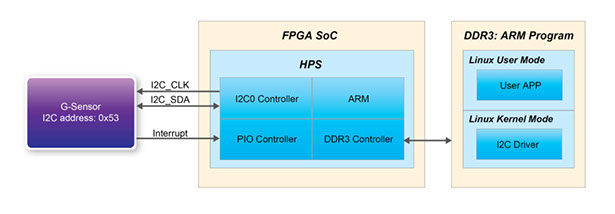

Atlas-SoC
Before you begin developing with the Atlas board you should walk through some of the interactive applications listed below to check board operation and get a feel for the capabilities of an integrated CPU and FPGA device.
Blink The LEDs
There are two sets of LEDs connected to the SoC device. One LED is connected to a GPIO pin of the ARM processor, and eight others are connected to the FPGA I/O pins.
LED Connected To The Processor
LEDs Connected To The FPGA

Blink

All On
All Off
Flash
Count
Accelerometer (Persistence of Vision)
Description:
This application uses the accelerometer connected via I2C interface to the CPU to detect movement. As the board is shaken back and forth the LEDs are strobed to provide, what our eyes detect as, the image of a heart.
Use:
- Click the button on the right to launch the application
- Once running (LEDs blink?) we recommend you disconnect the USB cable to prevent damage to the USB connector.
- Shake the board back and forth to see an image displayed by the LEDs.
- Once you are through, reconnect the USB cable
Fast Fourier Transform
Perhaps the most significant difference between SoC FPGAs and traditional processors is the ability to add custom hardware in the FPGA to add system features and/or performance. This example design demonstrates a case where hardware is added to offload the CPU from a compute intensive task (32-bit FFT of 4096 samples).
When you run the design, results in the form of CPU ticks are displayed to show the relative performance of two computation methods:
- CPU Processing: The 925 MHz dual-core ARM Cortex-A9 MPcore CPU and Neon co-processors are used to perform the FFT. The software uses optimized math libraries designed to exploit the power of the Neon co-processors.

- FPGA Processing: An FFT block inside the FPGA running at 100MHz is used to make the same mathematical transformation. DMA blocks in the FPGA read the raw data from the source location and write the results to the destination.
The example goes one step further, however, providing results based on different data flow scenarios:
- Data Source in the HPS: This would be the case for designs where the raw data is either generated by the CPU, or arrives via some processor interface (e.g. Ethernet).
- Data Source in the FPGA: This would be the case for designs where the FPGA provides an interface to an external data source (e.g. A/D converter), or where logic within the FPGA generates the data.
Click to run the design
Data Source in HPS
Data Source in FPGA
CPU Processing:
The 925 MHz, dual-core processor reads the source data from the RAM disk, computes the FFT results using software math libraries optimized for the Neon co-processors, then writes the results back to the RAM disk.
Results (clock ticks):
FPGA Processing (CPU Offload):
A DMA core inside the FPGA reads the data from RAM disk via the processor acceleration coherency port (ACP) and writes it to the FFT hardware block. A second DMA reads the results from the FFT core and writes the results back to the RAM disk via the ACP interface.
Since the ACP interface is used, both the raw and processed data are also directly available to the CPU via the L2 cache.
Results (clock ticks):


CPU Processing:
A DMA core in the FPGA transfers the data directly to the CPU L2 cache via the acceleration coherency port (ACP). The CPU then runs the FFT and writes the results to RAM disk.
Results (clock ticks):
FPGA Processing (CPU Offload):
One DMA core in the FPGA transfers the data directly to the the FFT hardware, while another writes the results to the RAM Disk via the acceleration coherency port (ACP).
Results (clock ticks):